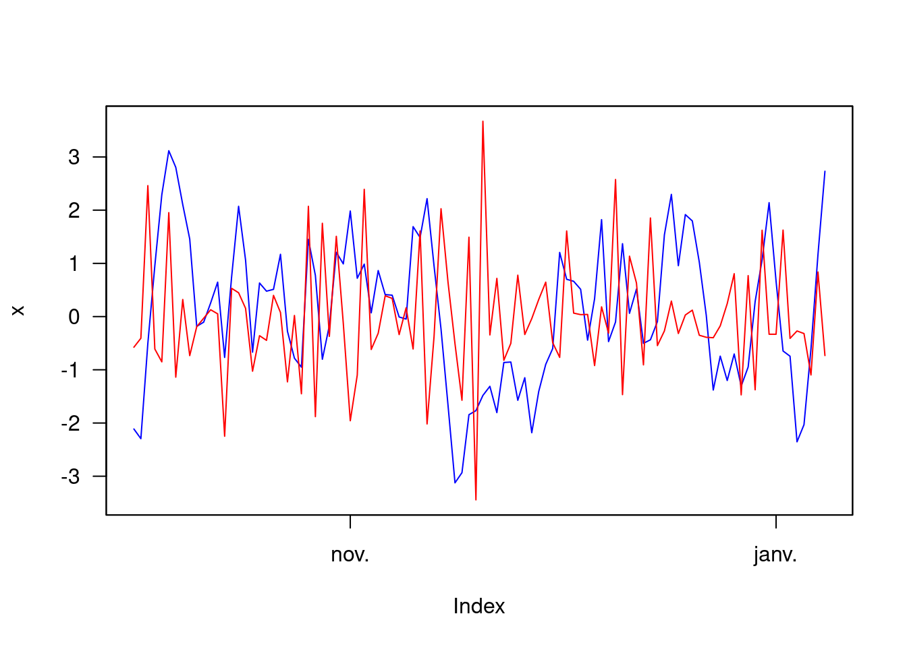

Chapitre 5 Les dates
5.1 Dates et unités de temps
Il existe plusieurs packages pour manipuler des données temporelles ; voir la Task View Time Series Analysis. Nous nous contentons ici de présenter quelques manipulations élémentaires. Une référence sur le sujet :
- G. Grothendieck and T. Petzoldt (2004), R Help Desk: Date and Time Classes in R, R News 4(1), 29-32 (https://www.r-project.org/doc/Rnews/Rnews_2004-1.pdf).
Dans R, une façon naturelle de manipuler des dates est d’utiliser la classe d’objet Date. Voici l’allure d’un objet de classe Date :
(format.Date <- Sys.Date())## [1] "2021-10-15"class(format.Date)## [1] "Date"En gros, il s’agit d’une chaîne de caractère de la forme “YYYY-MM-DD”, parfois “YYYY/MM/DD” ou encore “MM/DD/YY”. Pour passer d’une chaîne de caractère à un objet de classe Date, il faut donc préciser où sont placés les années, mois et jours dans la chaîne de caractère, préciser si les mois sont des valeurs numériques ou écrit en lettre, etc. Par exemple :
dates <- c("01/01/17", "02/03/17", "03/05/17")
as.Date(dates, "%d/%m/%y")## [1] "2017-01-01" "2017-03-02" "2017-05-03"dates <- c("1 janvier 2017", "2 mars 2017", "3 mai 2017")
as.Date(dates, "%d %B %Y")## [1] "2017-01-01" "2017-03-02" "2017-05-03"Les informations sur la façon dont convertir les chaînes de caractères en objet Date sont données dans l’aide suivante :
?format.DateUne autre classe d’objet utile est la classe POSIXct/POSIXt. Le format POSIXct/POSIXlt est plus précis que le format Date car il mesure à la fois la date et l’heure. Ce format est notamment utilisé dans les séries temporelles d’indices boursiers.
(format.POSIXlt <- Sys.time())## [1] "2021-10-15 18:54:16 CEST"class(format.POSIXlt)## [1] "POSIXct" "POSIXt"Un certain nombre de fonctions de R reconnaissent ce type de format. On en cite ici quelques-unes :
weekdays(format.POSIXlt)## [1] "vendredi"months(format.POSIXlt)## [1] "octobre"quarters(format.POSIXlt)## [1] "Q4"De même que pour les dates, il est possible de convertir des chaînes de caractères en POSIXct/POSIXlt ou de faire l’inverse. Pour cela, il faut respecter la nomenclature des dates (voir l’aide en ligne ?strptime). Pour convertir une chaîne de caractères en POSIXct/POSIXlt :
dates <- c("02/27/92", "02/27/92", "01/14/92", "02/28/92", "02/01/92")
times <- c("23:03:20", "22:29:56", "01:03:30", "18:21:03", "16:56:26")
x <- paste(dates, times)
strptime(x, "%m/%d/%y %H:%M:%S")## [1] "1992-02-27 23:03:20 CET" "1992-02-27 22:29:56 CET"
## [3] "1992-01-14 01:03:30 CET" "1992-02-28 18:21:03 CET"
## [5] "1992-02-01 16:56:26 CET"Pour faire l’inverse (transformer un POSIXct/POSIXlt en character) :
(z <- Sys.time())## [1] "2021-10-15 18:54:16 CEST"format(z,"%a %d %b %Y %X %Z")## [1] "ven. 15 oct. 2021 18:54:16 CEST"La fonction system.time() renvoie plusieurs informations concernant le temps de calcul d’une commande :
Utilisateur : il s’agit du temps mis par l’ordinateur pour exécuter directement le code donné par l’utilisateur,
Système : il s’agit du temps utilisé pas directement par le calcul, mais par le système (ex: gestion des entrées/sorties, écriture sur le disque, etc.) lié au code qui doit être exécuté.
écoulé : il s’agit du temps Utilisateur + Système C’est en général ce dernier qui est utilisé pour comparer des temps de calcul.
system.time(for(i in 1:100) var(runif(100000)))## utilisateur système écoulé
## 0.360 0.029 0.389Remarque : il est parfois compliqué de convertir des chaînes de caractères en Date ou POSIXct/POSIXlt, mais une fois que cela est fait, il est alors possible d’utiliser un nombre conséquent de packages existants, qui permettent en autre la manipulation de séries temporelles.
Exercice 1.6.
Q1 Quel jour (lundi, mardi … ?) sera le 1er janvier de l’année 2022 ?
Q2 Combien de jours nous séparent du 31 décembre de l’année en cours
5.2 Séries temporelles
Nous faisons ici un aparte pour évoquer la manipulation de séries temporelles.
On commence par simuler deux séries temporelles issues respectivement d’un processus AR(2) et MA(2). Nous ne rentrerons pas dans le détail de ces modèles mais le lecteur pourra se référer à l’ouvrage d’Yves Aragon “Séries temporelles avec R” pour une introduction. On utilise la fonction set.seed() avant chaque simulation, ce qui va nous permettre de générer la même séquence dès lors qu’on utilisera les mêmes entiers comme argument de la fonction (493 et 494 ici).
set.seed(493)
x1 <- arima.sim(model = list(ar = c(.9, -.2)), n = 100)
set.seed(494)
x2 <- arima.sim(model = list(ma = c(-.7, .1)), n = 100)Le principe d’une série temporelle est que les observations sont associées à une date et dans certains cas une date et un temps (indices boursiers observés en temps réel). Pour faire simple, on va associer la série à des dates journalières commencant le 1er octobre 2017 et de taille 100. Une façon de faire est d’utiliser la fonction seq.Date() :
date_x <- seq.Date(as.Date("2017-10-01"), by = "day", len = 100)Ensuite, on utilise la fonction zoo() du package qui porte le même nom pour associer les séries aux dates précédemment créées :
require("zoo")
x <- zoo(cbind(x1, x2), date_x)L’objet précédemment créé peut ensuite être appliqué aux fonctions du package zoo. Ainsi, en appliquant la fonction plot() à un tel objet, cela a pour avantage d’afficher en abscisses les dates, d’afficher plusieurs courbes s’il s’agit de séries temporelles multidimensionnelles, etc. On pourra consulter les fonctions du package zoo pour plus d’informations (help(package=“zoo”))
par(las = 1)
plot(x, col = c("blue", "red"), screens = 1)
Remarque : l’option las = 1 dans la fonction par() permet d’afficher la légende de l’axe des ordonnées horizontalement. L’options screens = 1 permet de représenter les deux séries dans la meme figure.